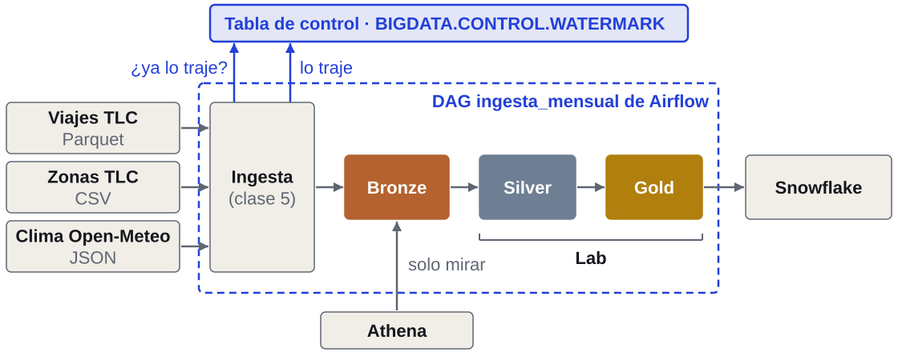
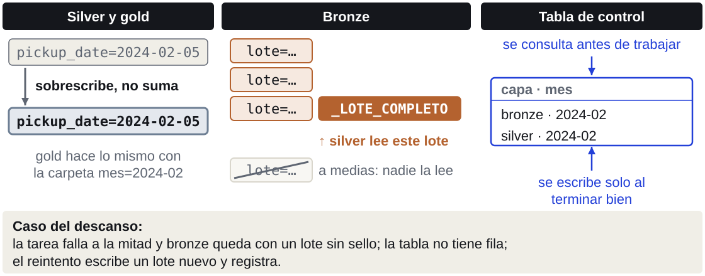

Big Data e Ingeniería de Datos
Clase 6 · Mirar el lake con Athena y automatizar la ingesta con Airflow
Posgrado UdeM · 18 nov 2026
Antes de la clase, cada persona dejó abierto el Code Editor con una terminal. Si el Space se apagó (se apaga solo tras 60 minutos sin uso), se enciende con Run space. La clase tiene cuatro partes: mirar con Athena lo que trajo la ingesta; construir silver y gold en un lab; automatizar con Airflow; y arrancar el Taller 2. El trabajo es individual y la única ayuda es el instructor; el Taller 2 se hace en equipos. Tiempo: 1 min. Siguiente: la pregunta de la clase.
¿Cómo se ejecuta todo el pipeline solo, cada mes, en orden y sin duplicar al reintentar?
Caso del curso: ¿la lluvia cambia los viajes en NYC?
Problema: en la clase anterior cada persona escribió una función que trae un mes de una fuente a su bronze. Pero un pipeline real no se ejecuta con un notebook y a mano: se ejecuta cada mes, con cinco pasos en un orden fijo, y a veces una tarea falla a la mitad y se repite. Si esa repetición duplica filas, cualquier suma queda inflada sin que nadie reciba un error. El año completo tiene 239.5 M de viajes (fuente: `restricciones_curso.md`) y enero, 19 663 930 en un solo archivo (`clase05_medidas.md`); duplicar un mes es duplicar cerca de 20 M de filas. Pide a dos personas que digan qué puede salir mal en esa ejecución mensual y anota las respuestas en una hoja visible: la clase las contesta una por una (orden, olvido, repetición, memoria). Conversación de 2 min. Tiempo: 2 min. Siguiente: el mapa de lo que haremos hoy.
Hoy miras qué trajo la ingesta, construyes silver y gold, y Airflow ejecuta todo cada mes

La tabla de control evita que una repetición duplique datos.
Problema: hoy mezclamos varias herramientas (Athena, un lab, Airflow, un taller) y sin un mapa cada una parece suelta. Este diagrama las coloca sobre una sola línea de izquierda a derecha, la del pipeline. Las tres fuentes llegan a la ingesta (lo que hiciste en la clase 5) y escriben bronze. Athena no es un paso del pipeline: es una ventana para mirar lo que hay en bronze antes de limpiarlo; por eso va debajo, con una flecha de lectura. Después vienen silver (limpia) y gold (resume), que son el lab de hoy, y por último la carga de gold a Snowflake, que ya conocías. Alrededor de las cinco tareas hay un marco: es el DAG de Airflow, el programa que las ejecuta en orden, cada mes. Arriba está la tabla de control, BIGDATA.CONTROL.WATERMARK, con las dos flechas de la clase 5: «¿ya lo traje?» antes de trabajar y «lo traje» al terminar bien. El color cobre es solo de bronze, gris de silver y ocre de gold. En clase, la parte del DAG corre en tu Code Editor con un mes de prueba (viajes limitados a 1 000 filas); en la clase 7 el pipeline corre en Glue con pipeline_taxi. Tiempo: 3 min. Siguiente: un repaso de las tres capas para que nadie dependa de la clase pasada.
El lake tiene tres capas: bronze guarda, silver limpia y gold resume
– Guarda cada fuente tal como llegó.
– Tipa columnas y descarta viajes imposibles; en el lab quitas repetidos.
– Resume por día, zona y empresa.
Esta slide hace la clase autocontenida: aunque alguien no recuerde la clase 5, aquí está lo necesario. Un lake es el almacenamiento de archivos del pipeline (en este curso, un bucket de S3) y se organiza en tres capas llamadas medallion. Bronze guarda cada fuente sin modificarla: los viajes de la TLC (el regulador de taxis de NYC) en Parquet, un formato que guarda por columnas; las zonas en un CSV; el clima de Open-Meteo en JSON. Cada ingesta crea una carpeta de lote nueva y nunca borra las anteriores (src/pipeline/bronze.py), con cinco columnas de metadatos, entre ellas una huella de la fila (_hash_fila). Silver aplica las reglas del código (src/pipeline/silver.py): distancia menor a 100 millas, duración entre 1 y 180 minutos y tarifa mayor que cero. Hoy no deduplica: quitar repetidos por la huella es el ejercicio 2 del lab (Celda 13, dropDuplicates(["_hash_fila"])). Gold agrega por día, zona y empresa, con promedios ponderados (src/pipeline/gold.py). Ejemplo real de lo que cambia: enero entra con 19 663 930 viajes y silver deja 19 650 023, es decir 13 907 descartados (`clase05_medidas.md`, corrida en Glue del 16 nov.). Tiempo: 2 min. Siguiente: la tabla de control, que decide si un mes se descarga.
La tabla de control anota cada mes ingestado y evita repetirlo
Una fila de BIGDATA.CONTROL.WATERMARK
Si es true, repite a propósito.
Problema: si la ingesta de enero se ejecuta dos veces, ¿cuántas copias de cada viaje quedan? Dos, y nada avisa. Idea de ingeniería: antes de trabajar, la función pregunta a una tabla si ese mes ya se trajo; al terminar bien, anota una fila. La tabla vive en Snowflake, en BIGDATA.CONTROL.WATERMARK, y la consulta con consultar_watermark(tabla, capa, mes) y la escribe con registrar_watermark(...) (src/pipeline/watermark.py; usa el rol ACCOUNTADMIN y el warehouse COMPUTE_WH). Regla: si el mes ya está registrado y reprocesar es falso, la función no hace nada; con reprocesar verdadero repite a propósito, crea un lote nuevo y no borra la historia. La fila de ejemplo es de viajes de enero, con las 19 663 930 filas medidas (`clase05_medidas.md`); la columna FUENTE guarda la URL real y las zonas, que no tienen mes, usan el mes «sin_mes». Qué no resuelve: la tabla no dice si los datos están bien, solo si se trajeron; eso es lo que Athena y silver revisan hoy. Tiempo: 3 min. Siguiente: dejar el entorno al día.
Antes de empezar, traes la versión de hoy y reparas el entorno solo si Python no es 3.12
# En una terminal del Code Editor, trae la versión de hoy del repositorio.
cd ~/bigdata && git pull
# Comprueba el Python del entorno del curso.
cd ~/bigdata && .venv/bin/python --version
# Solo si no dice 3.12: make -n imprime la receta sin ejecutarla.
cd ~/bigdata && make -n reparar-entorno
# Salida: bash scripts/reparar-entorno.sh
# Ahora sí: rehace .venv con Python 3.12 y reinstala dependencias.
cd ~/bigdata && make reparar-entorno
Si dice 3.12, salta los dos últimos comandos. Si lo ejecutas, espera «Entorno reparado: Python 3.12…» y elige otra vez el kernel Python (bigdata).
Problema: el código de hoy (tablas de Athena, el DAG ingesta_mensual y el lab) llegó al repositorio después de la última clase, y el Code Editor usa Python 3.13 mientras el del curso es el 3.12. Dónde: Terminal > New Terminal en el Code Editor. Entrada, parte por parte: `cd ~/bigdata && git pull` entra al repositorio y trae los cambios; `.venv/bin/python --version` imprime la versión del Python del curso: si ya dice 3.12, el entorno sirve y no hace falta repararlo, que ahorra los minutos más lentos de la apertura; si no, `make -n reparar-entorno` imprime la receta del target (`bash scripts/reparar-entorno.sh`, del Makefile) para que veas que make solo da nombre a un comando, y `make reparar-entorno` rehace .venv, reinstala dependencias, registra el kernel y repara snow, la línea de comandos de Snowflake. Salida esperada: «Python 3.12.x», y si se repara, «Entorno reparado: Python 3.12…». La duración de la reparación no se midió en el ensayo. Errores comunes: «Your local changes would be overwritten» (editaste archivos dentro del repositorio; guarda tu trabajo en una copia fuera de ~/bigdata y repite git pull); «No rule to make target» (no estás en ~/bigdata); «No such file or directory: .venv/bin/python» (no existe el entorno: ejecuta la reparación). Tiempo: 4 min. Siguiente: la primera pregunta de verdad: ¿qué trae bronze?
La tabla de control dice que el mes llegó, no qué trae dentro
– Enero registró 19 663 930 filas.
– Si esas filas traen nulos, viajes imposibles, repetidos o fechas de otro mes.
Problema antes que herramienta: la ingesta termina con un número de filas, pero ese número no dice si los datos sirven. Si silver limpia sin que sepas qué limpia, no puedes defender sus reglas ni detectar que una fuente cambió. Idea de ingeniería: medir el bronze antes de escribir la limpieza. Y se mide con lo que uno encuentra, no con lo que uno supone: lo que sigue es un hallazgo, no una lista de defectos prometidos. El dato crudo de enero está más limpio de lo que se creería en unas cosas (no hay filas idénticas ni recogidas fuera del mes) y no en otras (hay viajes imposibles y dos columnas vacías casi siempre de una empresa). Para consultar con SQL archivos que están en el lake, sin cargarlos antes a un almacén, se usa Athena. Diferencia con Snowflake: allá los datos se cargan y viven dentro del almacén; aquí se quedan en S3 y la consulta los lee en el sitio. Tiempo: 2 min. Siguiente: qué es Athena y qué no.
Athena consulta con SQL los archivos del lake donde están, sin cargarlos a ningún almacén

Se paga por los bytes que la consulta lee, y este workgroup corta en 1 GB.
Qué es: Athena es un servicio de AWS que ejecuta SQL sobre archivos de S3. Tiene tres piezas que el diagrama separa. Los datos siguen en S3, en las carpetas mes=2024-01 a mes=2024-12 del bronze. El catálogo (en AWS se llama Glue Data Catalog; aquí, la base bigdata_lake) guarda para cada tabla dónde están sus archivos y qué columnas tienen: es solo la descripción, no los datos. El workgroup (bigdata-wg) fija dónde se guardan los resultados y un tope de 1 GB leído por consulta (infra/aws/modules/lake/main.tf: `bytes_scanned_cutoff_per_query`; CONTRATO.md). Cobro: Athena cobra por los bytes que lee, por eso el diagrama resalta que solo se leen las carpetas que el filtro pide; no citamos precios. Qué resuelve: mirar y diagnosticar archivos sin cargarlos. Qué no resuelve: no es un almacén para uso diario ni sustituye a Snowflake; no mantiene los datos, no tiene índices y cada consulta paga la lectura. En la clase 7 se usa para conciliar capas. Tiempo: 3 min. Siguiente: la tabla que describe el bronze.
Una tabla externa de Athena solo describe dónde están los archivos y qué columnas traen
-- Base bigdata_lake. Las cinco tablas: curso/clase06/athena/01_tablas.sql.
CREATE EXTERNAL TABLE bigdata_lake.bronze_fhvhv (
pickup_datetime timestamp, pulocationid int,
trip_miles double, trip_time bigint -- y otras 20 columnas
)
PARTITIONED BY (mes string)
STORED AS PARQUET
LOCATION 's3://bigdata-lake-<CUENTA>-us-east-2/bronze/fhvhv/'
TBLPROPERTIES ('projection.enabled' = 'true',
'projection.mes.type' = 'date', 'projection.mes.format' = 'yyyy-MM',
'projection.mes.range' = '2024-01,2024-12' -- más interval y template
);
Los datos no se mueven: borrar la tabla no borra los archivos.
NOTEBOOK athena/01_tablas.sql
Problema: para consultar archivos con SQL, Athena necesita saber qué columnas tienen y en qué carpeta están. Idea: una tabla externa («externa» porque Athena no es dueña de los datos: borrar la tabla no borra los archivos). PARTITIONED BY (mes string) hace que mes sea una columna más, que sale del nombre de la carpeta mes=AAAA-MM. Sin proyección habría que registrar cada carpeta con MSCK REPAIR TABLE; con `projection.enabled`, Athena calcula las rutas a partir de la regla (mes de 2024-01 a 2024-12, uno por mes). La slide muestra solo cuatro de las 24 columnas y tres de las propiedades; el archivo real (`01_tablas.sql`) declara las 24, además de `interval`, `interval.unit` y `storage.location.template`, y también las tablas bronze_clima, bronze_taxi_zones, silver_fhvhv_trips (dev/silver/fhvhv_trips/) y gold_daily_zone_metrics (dev/gold/daily_zone_metrics/). Las seis sentencias se ejecutaron en 245 a 359 ms y 0 bytes (`clase06_medidas.md`). Importante, medido en la cuenta de prueba: la ingesta nueva de la clase 5 movió los crudos de bronze/<fuente>/mes=… a bronze/_crudo/<fuente>/…, con los mismos archivos y los mismos bytes, y escribió carpetas lote= al lado. Si tu cuenta está así, las tres tablas de bronze deben apuntar a `_crudo`; apuntarlas a la carpeta con lote= repetiría filas y mezclaría esquemas. El formato anterior sin mover (bronze/<fuente>/mes=) sí se probó contra la copia pública: dio 19 663 930 filas de enero. Tiempo: 2 min. Siguiente: abrir Athena y crear las tablas.
Antes de consultar, declaras las tablas en Athena con tu número de cuenta
# En una terminal del Code Editor, guarda tu número de cuenta de AWS.
cd ~/bigdata
CUENTA=$(aws sts get-caller-identity --query Account --output text)
# Mira dónde está tu bronze: carpetas mes= o una carpeta _crudo.
aws s3 ls s3://bigdata-lake-$CUENTA-us-east-2/bronze/
# Copia 01_tablas.sql con tu número de cuenta en lugar de <CUENTA>.
sed "s/<CUENTA>/$CUENTA/g" \
curso/clase06/athena/01_tablas.sql > ~/01_tablas_mio.sql
# En Athena (workgroup bigdata-wg, base bigdata_lake), pega cada
# sentencia de ~/01_tablas_mio.sql. SHOW TABLES debe mostrar cinco.
Si ves una carpeta _crudo, cambia /bronze/<fuente>/ por /bronze/_crudo/<fuente>/ en LOCATION y storage.location.template antes de pegar.
Demo del instructor, para replicar sin ayuda. Problema: las tablas apuntan a TU bucket, que lleva tu número de cuenta, y a la carpeta donde quedó tu bronze, que depende de si ejecutaste la ingesta nueva. Entrada, parte por parte: `cd ~/bigdata` entra al repositorio; `CUENTA=$(aws sts get-caller-identity --query Account --output text)` guarda en una variable tu número de 12 dígitos; `aws s3 ls s3://bigdata-lake-$CUENTA-us-east-2/bronze/` lista las carpetas de tu bronze: si ves `fhvhv/`, `clima/` y `taxi_zones/` con carpetas `mes=`, está en el formato anterior (se probó contra la copia pública: dio 19 663 930 filas de enero); si ves `_crudo/`, la ingesta nueva movió los crudos ahí (mismos archivos y mismos bytes) y hay que cambiar la ruta; `sed "s/<CUENTA>/$CUENTA/g" … > ~/01_tablas_mio.sql` reemplaza el marcador <CUENTA> en todo el archivo y guarda una copia tuya (la barra invertida continúa el comando en la línea siguiente). Después, en la consola de AWS, región us-east-2, Athena, editor de consultas: workgroup bigdata-wg, data source AwsDataCatalog, base bigdata_lake; abre ~/01_tablas_mio.sql y pega cada bloque, de CREATE a punto y coma, porque Athena ejecuta una sentencia por vez. Ejecuta `SHOW TABLES IN bigdata_lake;`: deben salir bronze_fhvhv, bronze_clima, bronze_taxi_zones, silver_fhvhv_trips y gold_daily_zone_metrics. Todas las consultas siguientes escriben la base completa para no depender del selector. Errores comunes: «Workgroup not found» (región equivocada), tablas con 0 filas (ruta de bronze equivocada o marcador sin reemplazar), «Unable to locate credentials» (terminal sin credenciales de AWS). En el ensayo del 18 nov. todo se ejecutó en la consola de Athena del Code Editor. Dos cosas que la consola no acepta y que ya están corregidas en `01_tablas.sql`: comentarios `--` dentro de un CREATE y un tipo struct partido en varias líneas; si alguien pega una copia vieja del archivo, falla por eso. En una cuenta con el bronze en formato nuevo, las tablas apuntan a `bronze/_crudo/`. Tiempo: 5 min. Siguiente: la primera consulta.
Primera consulta: las columnas clave de enero vienen completas; dos columnas de Lyft llegan incompletas
-- Workgroup bigdata-wg · base bigdata_lake · partición de enero.
SELECT count(*) AS filas,
count_if(pickup_datetime IS NULL) AS n_pickup,
count_if(pulocationid IS NULL) AS n_zona_recogida,
count_if(base_passenger_fare IS NULL) AS n_tarifa,
count_if(originating_base_num IS NULL) AS n_base_origen,
count_if(on_scene_datetime IS NULL) AS n_llegada_al_sitio
FROM bigdata_lake.bronze_fhvhv WHERE mes = '2024-01';
-- Salida, una fila: filas 19663930, n_pickup 0, n_zona_recogida 0,
-- n_tarifa 0, n_base_origen 5218737, n_llegada_al_sitio 5218737.
Casi todos esos nulos son de Lyft: 5 218 737 de sus 5 231 175 viajes. Uber no tiene ninguno. Silver no usa esas dos columnas.
NOTEBOOK athena/02_explorar_bronze.sql
Problema: un nulo es un valor vacío, y una suma que ignora nulos da un resultado menor sin avisar. Dónde: Athena, workgroup bigdata-wg, base bigdata_lake. Entrada: count(*) cuenta las filas; count_if(condición) cuenta las que cumplen la condición; AS nombra cada columna; WHERE mes = '2024-01' es el filtro de partición que veremos en la slide 16. Salida medida (`clase06_medidas.md`, paso 3, 17 nov.): 19 663 930 filas, 0 nulos en licencia, pickup, dropoff, zonas, millas, duración, tarifa y pago, y 5 218 737 nulos (26.5 %) en originating_base_num y on_scene_datetime, casi todos de Lyft (HV0005; Uber, HV0003, 0). La slide muestra 6 de las 12 columnas que mide `02_explorar_bronze.sql`; la consulta completa leyó 345 333 249 bytes (329 MB) en 1 826 ms. Cuéntalo como hallazgo: no era un error de la ingesta, es una propiedad de la fuente. El dato crudo está más limpio de lo que se creería en las columnas clave, y por eso se mide antes de limpiar. Errores comunes: «COLUMN_NOT_FOUND» por mayúsculas (Athena pasa los nombres a minúsculas). Tiempo: 3 min. Siguiente: viajes que no pueden ser reales.
Segunda consulta: 13 907 viajes de enero, el 0.07 %, incumplen alguna regla de silver
-- Umbrales de silver: 0 < millas < 100, de 1 a 180 minutos, tarifa > 0.
SELECT count(*) AS filas,
count_if(trip_miles <= 0) AS millas_cero_o_negativas,
count_if(trip_miles >= 100) AS millas_100_o_mas,
count_if(trip_time < 60) AS menos_de_1_min,
count_if(trip_time > 180 * 60) AS mas_de_3_horas,
count_if(base_passenger_fare < 0) AS tarifa_negativa,
count_if(base_passenger_fare = 0) AS tarifa_cero
FROM bigdata_lake.bronze_fhvhv WHERE mes = '2024-01';
-- Salida: 19663930, 3286, 1660, 1640, 791, 191 y 7143.
-- Una fila puede incumplir varias reglas: en total son 13907.
13 907 no es la suma de las columnas. 19 663 930 − 13 907 = 19 650 023, exactamente las filas de silver en enero.
NOTEBOOK athena/02_explorar_bronze.sql
Problema: un viaje puede venir con cientos de millas o con duración casi cero; son errores de captura que distorsionarían los promedios de gold. Entrada: los umbrales de src/pipeline/silver.py (DISTANCIA_MAX_MI = 100, DURACION_MIN_MIN = 1, DURACION_MAX_MIN = 180); trip_time viene en segundos, así que 1 minuto son 60 y 180 minutos son 10 800 (180 * 60). Salida medida (paso 4, 17 nov.): 3 286 con millas <= 0; 1 660 con 100 millas o más; 1 640 de menos de 1 minuto; 791 de más de 3 horas; 191 con tarifa negativa; 7 143 con tarifa 0. La consulta completa del archivo agrega destino anterior al origen (2), pago negativo (137) y la columna incumple_alguna_regla_de_silver: 13 907 filas, 0.07 %. Leyó 249 460 975 bytes (238 MB) en 1 433 ms. Los extremos (paso 4B): 417.62 millas, 14.46 horas, tarifa mínima -43.09. Cierre aritmético que el público puede verificar: 19 663 930 − 13 907 = 19 650 023, que es el número de filas de silver en enero (paso 9: 0 bytes; en la consola del Code Editor, 19 650 023 filas en 0.6 s). Lo que viste con SQL es lo que el lab hace con Spark. Tiempo: 3 min. Siguiente: viajes repetidos.
Tercera consulta: enero no tiene filas idénticas, pero 38 pares de viajes comparten empresa, hora y zonas
-- Huella de negocio: empresa, recogida, bajada y las dos zonas.
SELECT count(*) AS grupos_repetidos,
COALESCE(sum(c - 1), 0) AS filas_sobrantes
FROM (
SELECT count(*) AS c
FROM bigdata_lake.bronze_fhvhv
WHERE mes = '2024-01'
GROUP BY hvfhs_license_num, pickup_datetime, dropoff_datetime,
pulocationid, dolocationid
HAVING count(*) > 1);
-- Salida: grupos_repetidos 38, filas_sobrantes 38. Con las 24 columnas: 0.
Los 38 pares difieren en algo, como el precio: son viajes distintos. El ejercicio 2 deduplica por toda la fila, no por una huella parcial.
NOTEBOOK athena/02_explorar_bronze.sql
Problema: si una fuente trae el mismo viaje dos veces, o una ingesta se repitió, cada suma de gold lo cuenta dos veces y no hay error. Idea: dos filas son «la misma» si coinciden en las columnas que identifican un viaje; agrupar por esas columnas y quedarse con los grupos de más de una fila (HAVING count(*) > 1) las encuentra. COALESCE(…, 0) evita un NULL cuando no hay grupos. Salida medida (paso 5B, 17 nov.): 38 grupos de 2 filas (38 pares de viajes) y 38 filas sobrantes, con la huella de negocio de cinco columnas (151 MB leídos, 2 213 ms). Con nueve columnas (agrega millas, pago, tarifa y propina) quedan 2 grupos. Paso 5A, el duplicado exacto con las 24 columnas: 0 grupos, 0 filas sobrantes (472 684 581 bytes, 451 MB, 8 580 ms). Lectura correcta: en enero no hay duplicados exactos; las 38 coincidencias son viajes distintos que comparten empresa, hora y zonas. Por eso el ejercicio 2 del lab deduplica por la huella de toda la fila (dropDuplicates(["_hash_fila"]), Celda 13); el silver del repositorio hoy no deduplica; en enero da igual: 0 filas idénticas. Con una huella parcial se perderían viajes reales. El duplicado exacto aparece cuando una ingesta se repite, y para eso existe la tabla de control. Es el hallazgo central de la demo: el dato crudo no trae la basura que se esperaba. El GROUP BY es una operación ancha: Athena reparte filas por clave entre nodos. Tiempo: 3 min. Siguiente: fechas fuera del mes.
Cuarta consulta: ninguna recogida de enero cae fuera de enero, y 6 584 viajes terminan en febrero
-- La carpeta dice enero; ¿qué dicen las fechas dentro del archivo?
SELECT count_if(pickup_datetime < TIMESTAMP '2024-01-01 00:00:00'
OR pickup_datetime >= TIMESTAMP '2024-02-01 00:00:00')
AS recogida_fuera,
count_if(dropoff_datetime >= TIMESTAMP '2024-02-01 00:00:00')
AS bajada_en_febrero,
count_if(request_datetime < TIMESTAMP '2024-01-01 00:00:00')
AS pedido_en_diciembre
FROM bigdata_lake.bronze_fhvhv WHERE mes = '2024-01';
-- Salida: recogida_fuera 0, bajada_en_febrero 6584, pedido_en_diciembre 858.
Silver filtra por la fecha de recogida, no por la de bajada: un viaje que termina en febrero sigue siendo de enero.
NOTEBOOK athena/02_explorar_bronze.sql
Problema: la carpeta mes=2024-01 afirma que sus viajes son de enero, pero esa afirmación la hizo quien nombró la carpeta, no los datos. Entrada: tres condiciones contra el rango [1 de enero, 1 de febrero). Salida medida (paso 6A, 17 nov.): 0 recogidas fuera de enero (primer viaje 2024-01-01 00:00:00, último 2024-01-31 23:59:59); 6 584 viajes que terminan en febrero (empezaron antes de la medianoche del 31; la última bajada es 2024-02-01 02:10:41); 858 pedidos hechos en diciembre (pedido el 31, recogida el 1 de enero). 169 202 942 bytes (161 MB), 1 769 ms. Aclara que «fuera del mes» no siempre es un error: son viajes legítimos que cruzan la medianoche. Además, la comparación entre la carpeta y la fecha de recogida en los doce archivos (paso 6B, 641 MB, 2 182 ms) devuelve 0 filas: ningún archivo trae recogidas de otro mes. Cierra el bloque con las cuatro conclusiones, dichas como hallazgo: el dato crudo está más limpio de lo que creías en unas cosas (no hay filas idénticas ni recogidas fuera del mes, y las columnas clave no tienen nulos) y no en otras (13 907 viajes imposibles, 38 coincidencias por huella de negocio y 5.2 millones de nulos en dos columnas de Lyft). Por eso se mide antes de limpiar. Tiempo: 2 min. Siguiente: el costo de consultar el año.
Athena corta cada consulta al pasar 1 GB leído, así que hay que filtrar por mes. Sin filtro, la consulta falla con «Bytes scanned limit was exceeded».
infra/aws/modules/lake/main.tf; clase06_medidas.md
Problema: hasta ahora todas las consultas tenían WHERE mes = '2024-01'. Sin ese filtro, Athena abre las doce carpetas. El workgroup tiene un tope: `bytes_scanned_cutoff_per_query` = 1 GB, 1 073 741 824 bytes (infra/aws/modules/lake/main.tf). Demostración en vivo (paso 8 de `02_explorar_bronze.sql`): 8A, la consulta de siete columnas (licencia, conteo, suma de pago, propinas y tarifa, y promedios de millas y minutos) con WHERE mes = '2024-01', devolvió 2 filas (HV0003 Uber 14 432 755 viajes y HV0005 Lyft 5 231 175) y leyó 147 803 040 bytes (141 MB) en 1 373 ms. 8B, la misma consulta sin filtro, quedó en estado CANCELLED con el motivo «Bytes scanned limit was exceeded», Data scanned = 1 073 741 824 bytes, sin devolver filas (2 351 ms). Ejecútalas en vivo en ese orden. En el ensayo del 18 nov., la 8B también se ejecutó en la consola de Athena del Code Editor y falló con ese mismo mensaje; los bytes y el tiempo de arriba son de la prueba por CLI. La consola no mostró una cifra nueva para la 8A. Por qué existe: el tope protege el presupuesto de la cuenta de una consulta descuidada; no es un problema de dinero sino de hábito. Si alguien pregunta por el costo, la respuesta es que Athena cobra por byte leído y que la tarifa se consulta en la página oficial de AWS; no se cita aquí. Tiempo: 2 min. Siguiente: la poda de particiones.
Filtrar por mes hace que Athena lea una carpeta, no las doce: 53 MB frente a 641 MB
-- A: con filtro de mes, Athena abre una sola carpeta.
SELECT mes, min(pickup_datetime) AS primer_viaje
FROM bigdata_lake.bronze_fhvhv
WHERE mes = '2024-01'
GROUP BY mes;
-- Data scanned: 56 002 135 bytes, 53 MB, 1.1 s.
-- B: sin filtro, abre las doce.
SELECT mes, min(pickup_datetime) AS primer_viaje
FROM bigdata_lake.bronze_fhvhv
GROUP BY mes ORDER BY mes;
-- Data scanned: 671 711 446 bytes, 641 MB, 2.2 s.
Es una sola columna. Con siete columnas y el año completo se superó 1 GB y Athena canceló la consulta. Un conteo por mes lee 0 bytes.
NOTEBOOK athena/02_explorar_bronze.sql
Idea: poda de particiones (partition pruning): como la tabla está particionada por mes y el filtro nombra el mes, Athena descarta las carpetas de los otros meses sin abrirlas. Dónde: Athena, bigdata-wg. Entrada: dos consultas iguales, una con WHERE mes y otra sin él, sobre una sola columna (pickup_datetime). Salida medida (paso 2, bytes del 17 nov.; tiempos en la consola del Code Editor, 18 nov.): A, 56 002 135 bytes (53.41 MB en la consola), 1.1 s, y como rango 2024-01-01 00:00:00 a 2024-01-31 23:59:59; B, 671 711 446 bytes (640.59 MB), 2.2 s, con un rango por mes. Son 12 veces más bytes para la misma pregunta. El «Data scanned» se lee bajo el resultado en la consola. Dos palancas para gastar menos: pedir pocas columnas (Parquet guarda por columnas) y filtrar por mes. Un conteo por mes del año completo (paso 1) lee 0 bytes (1.6 s en la consola): Parquet guarda el número de filas en el pie del archivo; las filas por mes son 19 663 930; 19 359 148; 21 280 788; 19 733 038; 20 704 538; 20 123 226; 19 182 934; 19 128 392; 19 209 788; 20 028 282; 19 987 533 y 21 068 851, que suman 239 470 448. El paso 2C (`"$path"`) muestra qué archivo leyó la consulta A: uno solo (0.4 s). Tiempo: 3 min. Siguiente: ahora lo haces tú.
Ahora continuamos con el reto de Athena: marzo, el mes más grande del año
– Cinco consultas con huecos en 03_reto.sql.
– Sabrás cuántos viajes imposibles trae marzo y cuánto cuesta no filtrar.
NOTEBOOK athena/03_reto.sql
Transición al reto, en voz alta: ahora continuamos con el reto de Athena. Vas a ver cinco consultas con huecos (`-- TU CÓDIGO AQUÍ`) en curso/clase06/athena/03_reto.sql, que ya está en tu repositorio después del git pull. Marzo es el mes más grande del año: 21 280 788 viajes. Al terminar sabrás cuántos viajes imposibles y repetidos trae marzo y cuántos bytes cuesta no filtrar por mes. Cada ejercicio trae su resultado esperado en un comentario, para que sepas al instante si está bien. El trabajo es individual y la única ayuda es el instructor. Tiempo: 1 min. Siguiente: los pasos del reto.
Completa los huecos de las consultas 1, 2 y 5
Copia cada consulta de 03_reto.sql.
Completa columnas, subconsultas y ventana.
El 3 y el 4 quedan para casa.
Compara con el esperado; anota los bytes de 5A y 5B.
NOTEBOOK athena/03_reto.sql
Versión de estudiante de la demo: 13 min de trabajo individual con el workgroup bigdata-wg. El filtro de marzo ya viene escrito en cada consulta, salvo en la 5A, donde es el hueco; lo que se completa son columnas calculadas, subconsultas, la unión con CAST y una ventana. En clase se hacen los ejercicios 1, 2 y 5; el 3 y el 4 (repetidos y las cinco zonas con su nombre, con el JOIN y el CAST) quedan para casa. Resultados esperados medidos (`clase06_medidas.md`; solución en `validacion/contenido/clase06_athena_solucion.sql`, solo instructor). Ej. 1, empresa y porcentaje: HV0003 Uber 15 621 998 (73.4 %) y HV0005 Lyft 5 658 790 (26.6 %); 2 599 945 bytes (2.5 MB). Ej. 2, imposibles: 21 280 788 filas; millas 4 358; duración 2 098; tarifa 1 183; total 7 069 (0.033 %), que no es la suma; 112 124 969 bytes (107 MB). Ej. 3, para casa: 33 grupos y 33 filas sobrantes; 167 847 657 bytes (160 MB). Ej. 4, para casa: LaGuardia Airport 388 326; JFK Airport 371 026; East Village 297 394; Crown Heights North 290 327; Times Sq/Theatre District 259 277; 23 254 176 bytes (22 MB). Ej. 5, el costo de no filtrar: 5A, 23 241 845 bytes (22 MB); 5B sin filtro, 261 409 931 bytes (249 MB), unas 11 veces más y todavía bajo 1 GB porque lee una sola columna de 24. Las consultas de la solución se corrieron dos veces con los mismos resultados y bytes. Errores comunes: dejar 2024-01 (resultado distinto), unidades (trip_time en segundos, trip_miles en millas) y olvidar el filtro en 5A. Cierra a los 13 min con una pregunta a mano alzada: ¿cuántas veces más bytes leyó 5B? Tiempo: 13 min (protegidos). Siguiente: con ese diagnóstico, silver y gold.
Ahora continuamos con el lab: construyes silver y gold
– Cinco ejercicios: limpiar, quitar repetidos, unir zonas, agregar gold y registrar.
– Silver y gold quedan escritos y anotados en la tabla de control.
Transición, en voz alta: ahora continuamos con el notebook lab_silver_gold. Vas a ver cinco ejercicios que corresponden a lo que Athena mostró: el 1 tipa las columnas y descarta los viajes imposibles (slide 12); el 2 quita repetidos con la huella (slide 13); el 3 une las zonas con broadcast, que copia la tabla pequeña a cada ejecutor para no mover viajes; el 4 agrega gold por día, zona y empresa con promedios ponderados; y el 5, `procesar_capa`, envuelve silver y gold con la tabla de control. Al terminar, tu cadena sobre una muestra del 1 % de enero produce el mismo gold que el del repositorio, y cada capa queda anotada en la tabla de control. Cada ejercicio responde OK, PENDIENTE o REVISAR. Aviso: al terminar, ejecuta la Celda 26, que apaga Spark; antes del descanso haz además Kernel > Shut Down para liberar la memoria. Tiempo: 2 min. Siguiente: el ejercicio 5.
El ejercicio 5 envuelve silver y gold: consulta la tabla de control, procesa y solo al final registra
def procesar_capa(capa, tabla, mes, fuente, calcular, reprocesar=False):
registros = json.loads(consultar_watermark(tabla, capa, mes))
if len(registros) > 0 and not reprocesar:
return False # ya está registrado: no se hace nada
inicio = datetime.now(timezone.utc).replace(microsecond=0)
filas = calcular() # si falla, el error sube y no se registra
registrar_watermark(fuente, capa, tabla, mes, filas, inicio, reprocesar)
return True
Es la Celda 20, resumida. Las tablas de práctica del lab empiezan con «prueba_lab_», y la Celda 25 ejecuta la cadena tres veces.
Problema: la tabla de control evitó que la ingesta repitiera un mes; ahora silver y gold necesitan lo mismo, y la conciliación de la clase 7 compara las filas de cada capa con lo anotado. Idea: el registro va al final y solo si todo salió bien, así «anotado» significa «terminó». Entrada: `procesar_capa(capa, tabla, mes, fuente, calcular, reprocesar)` consulta la tabla (consultar_watermark devuelve un texto JSON con la lista de registros); si hay alguno y reprocesar es falso, devuelve False sin hacer nada; si no, mide el inicio, ejecuta `calcular()` (una función sin argumentos que escribe la capa y devuelve cuántas filas quedaron) y registra con registrar_watermark(fuente, capa, tabla, mes, filas, inicio, reprocesar). El módulo `src/pipeline/watermark.py` fija rol ACCOUNTADMIN, warehouse COMPUTE_WH y la tabla BIGDATA.CONTROL.WATERMARK. La Celda 21 verifica el ejercicio (OK, PENDIENTE o REVISAR) y la Celda 25 corre silver y gold sobre tu cadena tres veces: primera ejecución, segunda con el mismo mes (no hace nada) y reproceso pedido; imprime los registros de cada tabla (`prueba_lab_fhvhv_trips` y `prueba_lab_daily_zone_metrics`, mes 2024-01). La Celda 10 comprueba antes que la conexión a Snowflake funcione. Error común: «No se encontró la tabla BIGDATA.CONTROL.WATERMARK»: falta `make snowflake` de la clase 5; el mensaje del módulo dice cómo arreglarlo. Tiempo: 3 min. Siguiente: el trabajo individual.
Trabajas el lab por tu cuenta
Copia el notebook y elige el kernel Python (bigdata).
Completa cada hueco; la celda siguiente responde OK, PENDIENTE o REVISAR.
Con todo en OK, ejecuta la Celda 25 y mira los registros.
Tiempo protegido: 55 min de trabajo individual; no se recorta para ganar tiempo en Airflow. Primer minuto: `cd ~/bigdata/curso/clase06 && mkdir -p ~/clase06_mis_notebooks && cp lab_silver_gold.ipynb ~/clase06_mis_notebooks/` (no copies la solución). Kernel: Select Kernel > Jupyter Kernel > Python (bigdata); nunca uno de Glue, que cobra. En la máquina solo cabe un proceso de Spark: cierra los notebooks de la clase 5 antes. Mapa de Celdas (`clase06_mapa_celdas.md`, 27 celdas de código): preparación 1 a 5; muestra 6 a 8 (la muestra es el 1 % de enero); Celda 9, tu bronze de la clase 5 o uno generado si falta; Celda 10, comprobar la conexión a Snowflake; ejercicio 1, Celdas 11 y 12; ejercicio 2, 13 a 15; ejercicio 3, 16 y 17; ejercicio 4, 18 y 19; ejercicio 5, 20 y 21; cadena completa contra el pipeline del repositorio, 22 a 24; silver y gold con registro, 25; cierre de Spark, 26; y «a mano primero», 27 y siguientes: el mismo silver como programa con `cd ~/bigdata && PYTHONPATH=src .venv/bin/python -m pipeline.run --step silver --env local --engine local --mes 2024-01 --lake-bucket bigdata-lake-$CUENTA-us-east-2` y después `make run-local STEP=silver MES=2024-01` (la receta de make es `bash scripts/run-local.sh`). Quien termine antes hace esa sección. Pistas desplegables en cada ejercicio. A los 50 min avisa cuántos minutos quedan; a los 55 pasa a Airflow. Si ya hay estudiantes sin terminar la Celda 25, tienen la solución en casa: no se espera a todos. Errores comunes: «Java gateway process exited» (`cd ~/bigdata && make setup`), «ModuleNotFoundError» (kernel equivocado), error de Snowflake en la Celda 10. Antes del descanso: cierra Spark con la Celda 26 y haz Kernel > Shut Down; y pega tus cuatro funciones (calcular_hash_fila, Celda 9; clima, 16; zonas, 18; viajes, 20 del 03_lab de la clase 5) en `src/pipeline/ingesta_alumno.py` (slide 34) para que el DAG no falle con PENDIENTE; plan B: copiarlas de `curso/clase05/03_lab_solucion.ipynb`. Tiempo: 55 min (protegidos). Siguiente: el descanso.
Si Airflow reintenta una tarea a mitad, ¿qué queda en bronze y en la tabla de control?
Mientras descansas: cd ~/bigdata && bash scripts/airflow-local.sh up
Problema: la pregunta del día, vista desde un caso concreto. La ingesta de viajes descargó el archivo de febrero, escribió la mitad del lote y se cayó; Airflow la reintenta. ¿Hay media carpeta en bronze? ¿Hay una fila en la tabla de control? ¿Se descarga otra vez? Se contesta en la slide 26, con el mecanismo; no la contestes todavía. Antes del descanso, cada persona cierra Spark: ejecuta la Celda 26 del lab y, para liberar la memoria de verdad, usa Kernel > Shut Down en el notebook (Spark y Airflow juntos no caben cómodos en 7.6 GB; tras arrancar Airflow quedan disponibles unos 3.8 GB). Durante el descanso, quien quiera avanzar enciende Airflow con «a mano primero»: se muestra `cd ~/bigdata && make -n airflow-local`, que imprime `bash scripts/airflow-local.sh up`, y se ejecuta esa receta a mano: `cd ~/bigdata && bash scripts/airflow-local.sh up`. La primera vez instala Airflow 3.3.2 y nginx (en el ensayo del Code Editor tardó 59 s la primera vez), levanta Airflow y su interfaz, y al final imprime la URL, el usuario y la contraseña. `make airflow-local` es esa misma línea con nombre (slide 32). Esto es instalación del entorno, no un paso del pipeline. También en el descanso, quien no lo hizo pega sus cuatro funciones (calcular_hash_fila, Celda 9; clima, 16; zonas, 18; viajes, 20 del 03_lab de la clase 5) en `src/pipeline/ingesta_alumno.py` (slide 34) y corre `cd ~/bigdata && make test`; plan B: copiarlas de `curso/clase05/03_lab_solucion.ipynb`. Tiempo: 20 min. Siguiente: Airflow.
Cinco pasos a mano cada mes se olvidan, se desordenan o se repiten
– Un paso corre antes de terminar el anterior. Se olvida un mes.
– Orden, ejecución mensual y reintentos que no duplican.
Recupera la lista que se anotó al abrir la clase. Los cinco pasos son: traer zonas, traer clima, traer viajes, silver y gold. Problema: son cinco comandos que dependen unos de otros (silver no puede correr si los viajes no llegaron) y que se repiten cada mes durante años. A mano, alguien olvida un mes, corre silver antes de que termine la ingesta o repite un paso que ya terminó. Idea de ingeniería: describir el pipeline como un programa que dice qué tareas hay, en qué orden, cuándo se ejecutan y qué hacer si una falla. Una herramienta que ejecuta ese programa se llama orquestador, y Airflow es el más usado; nació en Airbnb y hoy es un proyecto de Apache. Qué resuelve: orden, programación, reintentos y registro de lo que pasó. Qué no resuelve: no procesa datos (los procesa Spark, Glue o Snowflake) ni vuelve idempotente una tarea que no lo es; eso lo hace el código de la tarea. Tiempo: 3 min. Siguiente: el vocabulario de Airflow sobre nuestro caso.
Un DAG es el plano de las tareas y de qué tarea debe terminar antes de cuál

DAG: grafo dirigido sin ciclos; una tarea nunca vuelve a una anterior.
Definiciones, con el caso: un DAG (Directed Acyclic Graph, grafo dirigido sin ciclos) es el programa que describe un pipeline: sus nodos son tareas y sus flechas son dependencias. «Dirigido» porque cada flecha tiene sentido; «sin ciclos» porque una tarea nunca puede depender de sí misma, ni siquiera de lejos. Una tarea es una unidad de trabajo que se ejecuta y termina (aquí, una función de Python que corre con el Python del .venv del repositorio, el mismo de los notebooks, porque el Airflow del Code Editor no tiene Spark; se llama ExternalPythonOperator). Una dependencia dice «esta tarea espera a que termine la anterior»: ingestar_clima solo arranca cuando ingestar_zonas terminó bien. Un run es una ejecución completa del DAG para un mes. Las tres primeras tareas llaman a TUS funciones de ingesta (src/pipeline/ingesta_alumno.py); silver y gold usan el código del repositorio (pipeline.silver y pipeline.gold, con Spark local) sobre el bronze que dejaron tus ingestas, y las cinco consultan y registran en la tabla de control. Las cinco van una tras otra y no en paralelo, a propósito: la máquina tiene 7.6 GB de RAM y solo cabe un Spark a la vez (`max_active_runs=1`). Los dos parámetros del DAG son mes y reprocesar: el DAG no tiene el mes escrito, lo recibe. Tiempo: 4 min. Siguiente: cuándo corre y qué pasa cuando algo falla.
El DAG corre cada mes, reintenta lo que falla y se reprocesa a propósito
Repite un mes a propósito
Tres ideas que se confunden y son distintas. Programación: en el DAG la línea `schedule="0 0 1 * *"` (día 1 de cada mes a medianoche) está comentada y queda `schedule=None`, así que en clase cada corrida se lanza a mano; si se activa, Airflow lanza un run en cada intervalo y le pasa la fecha lógica, que es el periodo que el run representa, no la hora en que corre; una corrida programada procesaría el mes que acaba de terminar. Se dejó comentada porque, activa, al encender el DAG Airflow lanzaría sola la corrida del mes en curso y el clima de un mes sin terminar falla (se vio en el ensayo del 18 nov.). Reintentos: `retries=1` con `retry_delay` de 10 segundos; sirven para fallas pasajeras (la red, una fuente que no responde); un reintento no debería cambiar el resultado final. Reproceso: volver a ejecutar un mes que ya terminó bien, por ejemplo porque la fuente corrigió sus datos; no es una falla, es una decisión, se pide con el parámetro reprocesar y crea un lote nuevo. Tiempo: 4 min. Siguiente: por qué un reintento no duplica.
Un reintento no duplica porque cada capa tiene su mecanismo: partición, lote completo y tabla de control

Idempotente: ejecutar dos veces deja el mismo resultado que ejecutar una.
Respuesta a la pregunta del descanso. Idempotencia: una operación es idempotente si ejecutarla varias veces deja el mismo resultado que ejecutarla una vez. Es la propiedad que hace seguros los reintentos. Se logra con tres mecanismos, uno por capa. (1) Reemplazar partición, en silver y gold: silver escribe con sobrescritura dinámica de la carpeta pickup_date=… y gold de mes=…; repetir la escritura sustituye la carpeta, no la suma (src/pipeline/io.py). (2) Lote nuevo y último lote completo, en bronze: cada ingesta escribe en una carpeta lote=<id> nueva y nunca borra las anteriores; silver lee el lote más reciente que tenga el marcador `_LOTE_COMPLETO`, que se escribe al final. Un lote a medias no tiene marcador y nadie lo lee. (3) Tabla de control: la fila se registra solo al terminar bien, y la función la consulta antes de trabajar. Ahora la pregunta: la tarea falló a la mitad. En bronze queda una carpeta de lote sin marcador (basura que ningún paso lee); en la tabla de control no queda ninguna fila; el reintento no encuentra registro, así que descarga o reutiliza el crudo, escribe un lote nuevo y registra. Qué queda sin resolver: el lote huérfano ocupa espacio hasta que alguien lo limpie; no hay limpieza automática hoy. Medido en la Mac del instructor (Airflow 3.3.2 real, descarga simulada): si el primer intento de ingestar_viajes falla, la tarea queda en `up_for_retry`, el reintento ingesta, clima y zonas no se repiten y queda un solo lote de viajes y un solo registro. Honestidad sobre el límite: la tabla de control y el marcador no son una transacción; si la tarea muere entre escribir el marcador y registrar la fila, el reintento escribe otro lote completo (sin duplicar silver, que lee solo el último). Tiempo: 5 min. Siguiente: un primer vuelo con la interfaz de Airflow.
Primer vuelo: recorres la interfaz con el DAG hola_airflow
Corre make airflow-local-estado.
Activa hola_airflow y lánzalo con mes 2024-02.
Lee la cuadrícula: success, running, failed, up_for_retry.
Abre el registro de una tarea y busca su mensaje.
Pulsa Clear para repetirla.
NOTEBOOK Airflow · hola_airflow
Es la primera vez que usan Airflow, y antes de tocar el DAG de verdad se practica con uno de juguete: `airflow/dags/hola_airflow.py`, sin Spark, sin Snowflake y sin red, que solo sirve para ver cómo se ve una corrida. Se lanza a mano (no tiene calendario), recibe el parámetro `mes` (por defecto 2024-02) y tiene tres tareas en cadena: saludar imprime un saludo y el mes que recibió; esperar duerme 15 s para que alcances a verla en «running»; reintentar falla a propósito en el primer intento y pasa en el reintento (`retries=1`, `retry_delay` de 10 s). Hoja de ayuda con capturas y pasos: `curso/clase06/airflow_primeros_pasos.md`. Paso 1, salud y memoria: `cd ~/bigdata && make airflow-local-estado` imprime la salud de cuatro componentes (base de datos, programador, triggerer y procesador de DAGs; deben decir healthy), la memoria libre y cuánta usa Airflow; es el comando que usaremos si algo se pone lento. Paso 2: en la lista de DAGs (la interfaz que abrió el arranque del descanso, por el puerto 8080 del Code Editor), busca hola_airflow; el interruptor junto al nombre lo activa o lo pausa, y si aparece en pausa hay que activarlo; botón de disparar (Trigger), escribe el mes en el formulario (acepta AAAA-MM) y confirma. Paso 3: la cuadrícula tiene una columna por ejecución y un cuadro por tarea; los colores: verde, success (terminó bien); verde claro que se mueve, running (en ejecución: lo verás con esperar); rojo, failed (falló y ya no hay más intentos); amarillo, up_for_retry (falló y Airflow espera para reintentar). Con este DAG verás reintentar pasar de rojo breve a amarillo y luego a verde, a los 10 s. Paso 4: hacer clic en un cuadro abre sus detalles; la pestaña de registro (Logs) muestra lo que la tarea imprimió: en saludar, «Hola, Airflow…» y «Mes recibido: 2024-02»; en reintentar, «Este es el intento número 1» y el error «FALLO INTENCIONAL en el intento 1: no es un error de verdad». Paso 5: Clear borra el resultado de una tarea y hace que Airflow la ejecute de nuevo (con sus tareas siguientes si así se pide). Medido en el ensayo del Code Editor (18 nov.): hola_airflow aparece en la lista, la corrida completa tarda 37 s, y en `reintentar` la pestaña de intentos (Task Tries) muestra el intento 1 en rojo, con «FALLO INTENCIONAL en el intento 1…» y la última línea del error apuntando a hola_airflow.py, línea 81, y el intento 2 en verde, con «Intento 2: esta vez sí funciona…». Memoria: tras arrancar, quedan disponibles unos 3.8 GB de 7.8 GB; el «Airflow 5 344 MB» que imprime el script suma memoria compartida, así que no lo uses como consumo real. Errores comunes: el DAG no aparece (error de importación: `airflow dags list-import-errors`), la URL abre el puerto 8081 en vez del 8080, y «Invalid credentials» (la contraseña cambia si se borra AIRFLOW_HOME). Tiempo: 6 min. Siguiente: el mini reto de romper y arreglar.
Rompe y arregla: con FALLAR_SIEMPRE en True la tarea falla; la corriges y usas Clear
# En airflow/dags/hola_airflow.py cambia la constante y guarda.
FALLAR_SIEMPRE = True # antes: False
# Lanza el DAG con mes 2024-02: reintentar queda en rojo (failed).
# Abre su registro y lee el error: dice qué línea cambiar.
FALLAR_SIEMPRE = False # arreglo
# Guarda y pulsa Clear en la tarea reintentar para ejecutarla otra vez.
# Salida esperada: reintentar termina en verde (success).
Con retries=1 verás primero amarillo (up_for_retry) y luego rojo. Hoja de ayuda: curso/clase06/airflow_primeros_pasos.md.
NOTEBOOK Airflow · hola_airflow
Mini reto individual, para que cada persona vea un fallo de verdad y sepa leerlo. Entrada: abre `airflow/dags/hola_airflow.py` en el editor y busca la constante `FALLAR_SIEMPRE`, que vale False; cámbiala a True y guarda. Espera unos segundos a que Airflow relea el archivo (en el ensayo del Code Editor el cambio se reflejó en la interfaz casi de inmediato; si no cambia, `cd ~/bigdata && airflow dags reserialize` con las variables de la slide 29). Lanza el DAG con mes 2024-02. Con True, reintentar falla en todos los intentos: primero queda amarillo (up_for_retry), a los 10 s se reintenta, vuelve a fallar y queda rojo (failed). Abre el registro de esa tarea: el mensaje dice «FALLO A PROPÓSITO (mini reto): FALLAR_SIEMPRE = True en airflow/dags/hola_airflow.py. Para arreglarlo, cambia esa línea a FALLAR_SIEMPRE = False, guarda el archivo y usa Clear en la tarea». Lección de ingeniería: el error está en el registro, no en el cuadro rojo; se lee de abajo hacia arriba hasta la línea del error. Arreglo: vuelve a poner False, guarda, y en la cuadrícula pulsa Clear sobre reintentar: Airflow la ejecuta de nuevo y ahora termina en verde (el primer intento fallará a propósito y el reintento pasará, como antes). Quien termine antes prueba lo mismo desde la terminal: `cd ~/bigdata && airflow dags test hola_airflow 2024-02-01 --conf '{"mes": "2024-02"}'` con las variables de la slide 29. Errores comunes: olvidar guardar el archivo, editar otra copia del repositorio, o dejar True y creer que Airflow está roto. Al terminar, FALLAR_SIEMPRE debe quedar en False. Tiempo: 6 min. Siguiente: los comandos a mano con el DAG real.
A mano: airflow dags reserialize carga los DAGs y airflow dags list los muestra
# Terminal del Code Editor. Una vez por terminal: entras y apuntas Airflow.
cd ~/bigdata
export AIRFLOW_HOME="$HOME/.airflow-local/home"
export PATH="$HOME/.airflow-local/venv/bin:$PATH"
export AIRFLOW__CORE__DAGS_FOLDER="$HOME/bigdata/airflow/dags"
export PYTHONPATH="$HOME/bigdata/airflow"
export AIRFLOW__CORE__LOAD_EXAMPLES=false
# HOME guarda la base de Airflow; DAGS_FOLDER, los DAGs; PATH, el comando.
airflow dags reserialize
airflow dags list
# Salida: ingesta_mensual y pipeline_taxi, ambos con is_paused True.
Sin reserialize, la tabla puede salir vacía («No data found»): nadie ha leído aún los archivos de DAGs.
Primero a mano: aún no usamos make. Ya practicaron la interfaz con hola_airflow, así que aquí solo se repiten los comandos con el DAG real. Dónde: una terminal nueva del Code Editor (no la que corre make airflow-local). Entrada, línea por línea: cd entra al repositorio; AIRFLOW_HOME apunta a la carpeta donde `make airflow-local` ya dejó la base y la configuración; PATH pone primero el airflow del venv que instaló el script (~/.airflow-local/venv); DAGS_FOLDER es donde Airflow busca DAGs; PYTHONPATH incluye airflow/ para el paquete framework; LOAD_EXAMPLES=false evita los DAGs de ejemplo. `airflow dags reserialize` hace que Airflow lea los archivos de DAGs y guarde su estructura; `airflow dags list` imprime una fila por DAG. Salida esperada (medida en la Mac del instructor con Airflow 3.3.2, `clase06_medidas.md`): ingesta_mensual y pipeline_taxi, ambos con is_paused = True. Son las variables que `scripts/airflow-local.sh` exporta; el script además fija PIPELINE_ENTORNO=dev y LAKE_BUCKET, que los DAGs de Glue necesitan y estos no. En el ensayo, `airflow dags list-import-errors` imprimió «No data found», que significa que no hay errores de importación. El comando airflow vive en el venv que crea el primer arranque (~/.airflow-local/venv), por eso el arranque va en el descanso (slide 22); no se probó el comando antes de ese arranque. Errores comunes: «command not found: airflow» (falta el PATH o no terminó de instalar); lista vacía (reserialize pendiente o DAGS_FOLDER mal escrito); «Broken DAG» (error de importación: `airflow dags list-import-errors`). Tiempo: 3 min. Siguiente: ver las tareas y probar una sola.
A mano: tasks test ejecuta una sola tarea y escribe de verdad
# Para todos: borra los registros de práctica de la tabla de control.
cd ~/bigdata
PYTHONPATH=src .venv/bin/python -c "
from pipeline.watermark import borrar_registros_de_prueba as borrar
for t in ('prueba_taxi_zones', 'prueba_clima', 'prueba_fhvhv',
'prueba_fhvhv_trips', 'prueba_daily_zone_metrics'):
print(t, borrar(t))"
# Ahora una tarea sola (mismas variables de la slide anterior).
cd ~/bigdata
airflow tasks test ingesta_mensual ingestar_zonas 2024-01-02 \
--task-params '{"mes": "2024-01", "reprocesar": false}'
# Fecha distinta en cada prueba. Salida: DECISIÓN: INGESTÓ.
Ojo: tasks test escribe de verdad; si esa fecha ya tiene corrida, usa otra fecha.
Paso previo, para todos: la clase 5 dejó registros en las tablas `prueba_*` (enero) y los alumnos que ensayaron antes también; si quedan, la primera ejecución diría SE SALTÓ en lugar de INGESTÓ. `borrar_registros_de_prueba` borra solo registros de la tabla de control cuyo nombre empieza con `demo` o `prueba`; no toca archivos de bronze, silver ni gold. Entrada: `PYTHONPATH=src .venv/bin/python -c "…"` ejecuta el código de entre comillas con el Python del curso y deja que importe el paquete `pipeline`; el bucle recorre las cinco tablas del DAG e imprime cuántos registros borró de cada una. Después, la prueba de una tarea: antes ejecuta `airflow tasks list ingesta_mensual`, que imprime las cinco tareas (ingestar_zonas, ingestar_clima, ingestar_viajes, silver, gold). `airflow tasks test` ejecuta la tarea en el proceso actual, ignora las dependencias y no deja registro de corrida, pero la función de ingesta sí escribe en tu bronze y en la tabla de control, como si fuera de verdad. Argumentos: el id del DAG, el id de la tarea y la fecha lógica; `--task-params` lleva un JSON con los parámetros. Rareza medida: si ya existe una corrida con esa fecha lógica, manda su configuración y `--task-params` se ignora; por eso se usa una fecha distinta en cada prueba o `airflow dags test --conf` (siguiente slide). Salida medida: la última línea del log es `DECISIÓN: INGESTÓ …` la primera vez y `DECISIÓN: SE SALTÓ …` la segunda, porque la tabla de control ya tiene las zonas (las zonas no tienen mes: se anotan con «sin_mes»). Consecuencia para la demostración: en la ejecución 1 de la slide 31, zonas dirá SE SALTÓ porque esta prueba ya la anotó. Medido en el Code Editor: `tasks test` de ingestar_zonas tardó 42 s, descargó 265 zonas, y la decisión fue INGESTÓ, con registro en el Snowflake real. En el log de cada tarea verás `Traceback … ModuleNotFoundError: No module named 'pendulum'` y la tarea sigue y termina bien: Airflow comprueba si el Python del .venv tiene pendulum y lo anuncia con ruido; es inofensivo. Errores comunes: «PENDIENTE: pega tu función ingestar_zonas…» (función vacía), «DagNotFound» (variables sin definir). Tiempo: 3 min. Siguiente: el DAG completo.
A mano: airflow dags test ejecuta el DAG completo en orden y recibe sus parámetros
# Mismas variables; el comando ocupa dos líneas por la barra final.
cd ~/bigdata
airflow dags test ingesta_mensual 2024-02-01 \
--conf '{"mes": "2024-02", "reprocesar": false}'
# dags test corre las cinco tareas en orden, en un solo proceso.
# --conf es un JSON con los parámetros del DAG: mes y reprocesar.
# Es la ejecución 1 de tres con febrero.
# Tarda cerca de 2 min. Salida: cinco tareas en success.
Ejecución 1: zonas dice SE SALTÓ (la anotó tasks test); clima, viajes, silver y gold dicen INGESTÓ o CONSTRUYÓ. Las ejecuciones 2 y 3 vienen después.
NOTEBOOK Airflow · ingesta_mensual
Es la ejecución 1 de la demostración, sin la interfaz. Entrada: `airflow dags test` ejecuta el DAG completo en un solo proceso, en el orden de las dependencias, sin necesitar el programador; ingesta_mensual es el dag_id; 2024-02-01 la fecha lógica; `--conf` recibe un JSON con los nombres de los parámetros, mes y reprocesar (el formulario de la interfaz valida el formato AAAA-MM; aquí lo valida la tarea). Febrero, porque la clase 5 solo ingestó enero. Salida esperada: cinco tareas en success y cinco líneas `DECISIÓN`: zonas SE SALTÓ (ya anotada por el tasks test de la slide 30), y clima, viajes, silver y gold INGESTÓ o CONSTRUYÓ. Medido en el ensayo del Code Editor (18 nov., Airflow 3.3.2, descarga real y Snowflake real), con `--conf` mes 2024-02: la ejecución 1 tardó 2 min 1 s. Zonas SE SALTÓ (ya la registró `tasks test`); clima INGESTÓ (21 s); viajes INGESTÓ, con descarga real de unos 450 MiB y 1 000 filas escritas (29 s); silver CONSTRUYÓ 1 000 filas (26 s); gold CONSTRUYÓ 281 filas (25 s). Las 1 000 filas son el modo de prueba, no se perdió nada. Memoria: la disponible bajó hasta unos 700 MB mientras corría, así que regla de clase: ningún notebook con Spark abierto mientras corre el DAG (Kernel > Shut Down en el descanso). En el log de cada tarea aparece el Traceback de pendulum: es inofensivo, la tarea sigue y termina bien. La ejecución 2 (16 s, slide 33) y la 3 (2 min 4 s, slide 35) vienen después. Las tablas del DAG llevan el prefijo prueba_ (prueba_taxi_zones, prueba_clima, prueba_fhvhv, prueba_fhvhv_trips y prueba_daily_zone_metrics) para que el modo de prueba de 1 000 filas no quede registrado como el mes completo. Errores comunes: «Invalid JSON» (comillas), mes con formato distinto, «No hay ningún lote completo» en silver (se saltó una ingesta o el mes no coincide), falta de memoria si Spark del lab sigue abierto, y «database is locked» si el Airflow standalone está encendido: plan B: ejecuta antes cd ~/bigdata && make airflow-local-down, o lanza el DAG solo desde la interfaz. Tiempo: 4 min. Siguiente: la misma ejecución, pero ya con nombre y desde la interfaz.
make airflow-local envuelve el arranque: las variables y airflow standalone; make -n lo muestra
– Las variables y airflow standalone, dentro de scripts/airflow-local.sh.
– make airflow-local ejecuta bash scripts/airflow-local.sh up; make -n lo imprime.
Paso 3 de «a mano primero»: abrir el Makefile y mostrar que make solo da nombre a un comando; en el descanso ya ejecutaste esa receta a mano. Entrada: `cd ~/bigdata && make -n airflow-local`. Salida: una sola línea, `bash scripts/airflow-local.sh up` (medida en `clase06_medidas.md`). Ese script instala Airflow la primera vez, escribe la configuración de nginx (el proxy que permite abrir la interfaz desde el Code Editor), fija las variables de entorno que escribimos a mano en la slide 29 y ejecuta `airflow standalone`, que levanta el programador, el servidor web y la base en un solo comando. `make airflow-local-down` lo detiene y `make airflow-local-estado` muestra su salud y su memoria. Con `make airflow-local` aparecen la URL de la interfaz y la contraseña de admin. Los comandos de las slides 29 a 31 no tienen target de make; son del propio Airflow: make envuelve el arranque, no la ejecución del DAG. La de silver y gold local sí tiene target: `make -n run-local STEP=silver MES=2024-01` imprime `STEP=silver MES=2024-01 LIMITE= bash scripts/run-local.sh`. Desde aquí, make. Tiempo: 2 min. Siguiente: la interfaz.
La interfaz lanza el mismo DAG y la ejecución 2 salta las cinco tareas
Abre la URL del arranque y entra como admin.
Activa ingesta_mensual: nace en pausa.
Pulsa Trigger con mes 2024-02, sin reprocesar.
Las cinco tareas dicen SE SALTÓ.
NOTEBOOK Airflow · ingesta_mensual
Demo del instructor, para replicar. Es la ejecución 2 de la secuencia de febrero: el mismo mes que la ejecución 1 (slide 31), sin reprocesar. Dónde: la URL que imprimió el arranque, con la forma `https://<id-del-space>.studio.<región>.sagemaker.aws/codeeditor/default/ports/8080/`; usuario admin y la contraseña impresa. Paso 2: el DAG nace en pausa (`is_paused_upon_creation=True`); el interruptor está junto al nombre (no se midió si un disparo manual corre con el DAG en pausa; en clase se activa antes). Paso 3: el formulario de disparo valida `mes` en formato AAAA-MM; `reprocesar` es una casilla desmarcada por defecto. Paso 4: cada tarea es un cuadro que pasa de gris a verde; al abrirlo se ve su log. Medido en el ensayo del Code Editor, lanzado desde la interfaz: la corrida tardó 16 s, con las cinco tareas en 2 a 3 s cada una (frente a 2 min 1 s de la ejecución 1), todas con `DECISIÓN: SE SALTÓ` y sin lotes nuevos. El DAG apareció sin errores de importación y ExternalPythonOperator ejecutó con el .venv de Python 3.12. No se midió la memoria con la interfaz y Spark a la vez: por eso Spark va cerrado. Errores comunes: 404 o página en blanco (se abrió el puerto 8081 en vez del 8080, el que pasa por nginx), «Invalid credentials» (la contraseña cambia si se borra AIRFLOW_HOME), el DAG no aparece (error de importación, slide 29). Tiempo: 4 min. Siguiente: qué hay dentro del DAG.
El DAG ingesta_mensual llama a tus tres ingestas y al código de silver y gold
# airflow/dags/ingesta_mensual.py (resumido)
with DAG(dag_id="ingesta_mensual", schedule=None, # cada mes: "0 0 1 * *"
catchup=False, default_args={"retries": 1}, max_active_runs=1,
params={"mes": "", "reprocesar": False}) as dag:
zonas = tarea_ingestar_zonas(tabla="prueba_taxi_zones", ...)
clima = tarea_ingestar_clima(tabla="prueba_clima", mes=MES, ...)
viajes = tarea_ingestar_viajes(tabla="prueba_fhvhv",
limite_filas=1000, ...)
silver = tarea_silver(tablas={...}, mes=MES, ...)
gold = tarea_gold(tablas={"gold": "prueba_daily_zone_metrics"}, ...)
zonas >> clima >> viajes >> silver >> gold
Si una función sigue vacía, la tarea falla con «PENDIENTE». Pega las cuatro desde las Celdas 9, 16, 18 y 20 del 03_lab de la clase 5.
NOTEBOOK Airflow · ingesta_mensual
Problema: ya escribiste las funciones de ingesta; el DAG no debe reescribirlas, solo decir cuándo y en qué orden llamarlas. Qué hay dentro (archivo real, resumido): un DAG con la programación mensual comentada (`schedule=None`), `catchup=False`, nace en pausa, `max_active_runs=1`, `retries=1` y `retry_delay` de 10 s, y los parámetros `mes` (con patrón AAAA-MM) y `reprocesar`; cinco tareas con `@task.external_python`, cada una autocontenida, y la línea de dependencias con >>. Las tres primeras llaman a tus funciones de `src/pipeline/ingesta_alumno.py`: ingestar_zonas(reprocesar, base_bronze, tabla), ingestar_clima(mes, reprocesar, base_bronze, tabla) e ingestar_viajes(mes, reprocesar, base_bronze, tabla, limite_filas). Silver y gold usan el código del repositorio (pipeline.silver y pipeline.gold, con Spark local) sobre el bronze que dejaron tus ingestas y registran en la tabla de control. Cada tarea imprime qué decidió: INGESTÓ, CONSTRUYÓ, SE SALTÓ o REPROCESÓ. El límite de 1 000 filas en viajes es el modo de prueba: se descarga el archivo completo (unos 450 MiB) pero solo se escriben 1 000 filas; el mes completo (19.6 M de filas) no cabe junto con Airflow en 7.6 GB (`INGESTA_LIMITE_VIAJES=0` lo activa; no se midió). Prueba de integridad en CI: `airflow/tests` tiene 7 pruebas nuevas de ingesta_mensual (carga, cadena en orden, params, calendario, reintentos, Python del repo y modo de prueba), 19 en total con las 12 de pipeline_taxi (todas pasan en la Mac). Antes de la demo, cada estudiante pega sus cuatro funciones (calcular_hash_fila, Celda 9; clima, 16; zonas, 18; viajes, 20 del 03_lab de la clase 5; plan B: copiarlas de `curso/clase05/03_lab_solucion.ipynb`): `cd ~/bigdata && make test` las prueba (con funciones vacías, 5 pruebas pasan y 13 se omiten con «PENDIENTE»; con la solución pasan las 18). Si la CI de un fork falla en ruff después de pegar, es una decisión pendiente del instructor (extend-exclude o `ruff format`). Tiempo: 4 min. Siguiente: la demostración.
Ejecución 3: con reprocesar verdadero el DAG repite febrero y crea lotes nuevos
Lanza mes 2024-02 y marca reprocesar.
Las cinco tareas dicen REPROCESÓ.
Ojo: vuelve a descargar unos 450 MiB.
Consulta la tabla de control en Snowsight.
NOTEBOOK Airflow · ingesta_mensual
Tercera ejecución de la secuencia de febrero (1: slide 31; 2: slide 33). Paso 1: Trigger con mes 2024-02 y la casilla reprocesar marcada (o `dags test` con `"reprocesar": true`). Paso 2: con reprocesar verdadero cada tarea ignora la tabla de control, crea un lote nuevo por fuente (los anteriores siguen ahí), silver lee el más reciente y la tabla suma registros con REPROCESAR en verdadero. Medido en el ensayo del Code Editor (18 nov.): 2 min 4 s, con cada tarea entre 22 y 26 s, y cinco registros nuevos en la tabla de control, uno por tarea. Aviso importante: reprocesar vuelve a descargar el archivo de viajes, unos 450 MiB (el modo de prueba solo limita las filas que se escriben), así que tarda más que la ejecución 2; avisa antes de lanzarlo. Prueba adicional medida en la Mac (descarga simulada): si la ingesta de viajes falla en el primer intento (la descarga se cae), la tarea queda `up_for_retry`, el reintento ingesta, clima y zonas no se repiten y queda un solo lote de viajes y un solo registro (37 s). Si algo sale distinto de lo esperado, es un hallazgo y se dice. Para repetir la clase se borran los registros prueba_ con el comando de la slide 30. Tiempo: 4 min. Siguiente: la consulta con su salida.
La tabla de control suma filas solo en las ejecuciones 1 y 3; la 2 no agrega ninguna
USE ROLE ACCOUNTADMIN;
USE WAREHOUSE COMPUTE_WH;
SELECT capa, tabla, filas, reprocesar
FROM BIGDATA.CONTROL.WATERMARK
WHERE mes = '2024-02' AND tabla LIKE 'prueba_%' ORDER BY inicio;
-- capa tabla reprocesar
-- bronze prueba_clima false (ejecución 1)
-- bronze prueba_fhvhv false (ejecución 1)
-- silver prueba_fhvhv_trips false (ejecución 1)
-- gold prueba_daily_zone_metrics false (ejecución 1)
-- (la 2 no agrega filas; la 3 agrega cinco con true: una por tarea)
Rol y warehouse van explícitos. La columna filas se omite aquí; en el ensayo, viajes y silver 1 000, gold 281.
Muestra cómo se ve lo que las slides 31, 33 y 35 hacen: la consulta con su salida. Dónde: Snowsight, hoja de SQL. Entrada: USE ROLE y USE WAREHOUSE fijan quién consulta y con qué cómputo (ACCOUNTADMIN y COMPUTE_WH, los de src/pipeline/watermark.py); la base y el esquema van completos en el FROM, BIGDATA.CONTROL.WATERMARK; LIKE 'prueba_%' deja solo las tablas del DAG. Las zonas no salen en este filtro porque se anotan con el mes «sin_mes». Salida: la forma esperada; las filas se omiten en la slide. Medido en el ensayo del Code Editor: zonas 265 filas, viajes 1 000, silver 1 000 y gold 281; el clima no se midió allí (en la Mac, con datos de prueba, fueron 31). En el Code Editor, con el modo de prueba, los viajes escriben 1 000 filas, no 19.6 M: dilo en voz alta para que nadie crea que se perdieron datos. Cómo leer la salida: ejecución 1, una fila por tabla y capa; ejecución 2, ninguna fila nueva; ejecución 3, cinco filas nuevas con reprocesar en true, una por tarea (la tabla conserva las anteriores; con el filtro por mes de la consulta se ven las de bronze, silver y gold, y la de zonas queda fuera porque lleva «sin_mes»). La prueba definitiva de idempotencia es que el conteo de filas de silver para febrero no cambia en la ejecución 2. Errores comunes: «Object does not exist or not authorized» (sin USE ROLE ACCOUNTADMIN), «No active warehouse selected» (sin USE WAREHOUSE). Tiempo: 4 min. Siguiente: dos contextos para situar lo hecho: lotes frente a tiempo real y plataformas de Spark.
Los lotes bastan aquí; Glue, EMR, Snowpark y Databricks dan más cómputo
Solo concepto, 4 min, en dos mitades. Lotes y tiempo real. Problema: lo que construimos procesa un mes cuando el mes ya está completo; una pregunta como «avisar mientras llueve que los viajes subieron» no espera al fin de mes. Lotes (batch): se procesan los datos acumulados en un periodo, en un momento programado; es lo que hace Airflow con Spark, y conviene cuando la fuente publica por periodos (la TLC publica un archivo al mes) y el negocio tolera horas de retraso. Tiempo real (streaming): se procesa cada evento al llegar, con latencia de segundos; requiere un sistema que reciba eventos continuamente (por ejemplo Kafka o Kinesis) y un motor que mantenga estado (Spark Structured Streaming procesa en microlotes); estado, orden y eventos tardíos pasan a ser el problema central. Para el curso, el tiempo real es solo concepto. Plataformas. Hoy Spark corre en tu Code Editor, de 2 vCPU y 7.6 GB; con 239.5 M de viajes eso no alcanza (`clase05_medidas.md`). Glue: servicio de AWS que ejecuta Spark sin que administres servidores; es el de la clase 7 con 2, 4 o 6 workers (`CONTRATO.md`). EMR: clústeres Spark y Hadoop de AWS que tú dimensionas; más control, más administración; no está disponible en el plan gratuito de AWS de este curso. Snowpark: DataFrames en Python que se ejecutan dentro de Snowflake; mismo estilo de código, pero no es Apache Spark. Databricks: plataforma comercial creada por los autores de Spark, con notebooks y clústeres administrados, sobre varias nubes. Tu lógica de silver y gold es la misma; cambia dónde corre y quién gestiona el clúster. No se citan precios. Con esto cerramos la parte técnica de hoy: lo que construiste (ingesta, silver, gold y un DAG que lo ejecuta) es la base del Taller 2, donde cada equipo cambia una pieza y responde su propia pregunta. Tiempo: 4 min. Siguiente: el Taller 2.
El Taller 2 pide una transformación propia que responda tu pregunta sobre la lluvia
Equipo, pregunta, cambio y contrato.md
Pipeline corriendo en Glue
Entrega: release t2-entrega
Fuente: `curso/taller2/README.md`. El taller vale 100 puntos y, con el Taller 1, forma la nota de talleres, 50 % cada uno; se trabaja solo con GitHub, el Code Editor, AWS y Snowflake. La pregunta de fondo: ¿cómo sé que la cifra que respondo es confiable? Cinco entregables: (1) una transformación propia en silver o gold (src/pipeline/silver.py o gold.py); (2) pruebas con pytest y CI en verde; (3) el pipeline completo en Glue lanzado desde Airflow con `pipeline_taxi`, el DAG que tiene el parámetro de cómputo (`ingesta_mensual` no llama a Glue); (4) conciliación entre capas con la tabla de control y la consulta en Snowflake que responde la pregunta; (5) costo y calidad documentados. Calendario: hoy, equipo, pregunta, cambio elegido y contrato.md subido al repositorio; 23 nov, pipeline corriendo en Glue con las funciones del equipo; 24 nov, avance revisado en clase (no hay defensa en vivo ni se califica por separado); 29 nov, entrega con el release t2-entrega antes de las 23:59, hora de Colombia (el README la marca como propuesta, por confirmar con el profesor). La rúbrica está en la sección 11 del README. Tiempo: 4 min. Siguiente: el contrato.
El contrato fija pregunta, cambio y pruebas antes de programar
Plantilla curso/taller2/contrato.md
Rotan: nadie repite el del Taller 1
¿Los viajes largos caen más con lluvia?
Columna RANGO_DISTANCIA en silver
Problema: los equipos que programan sin acordar qué van a cambiar descubren tarde que su pregunta no se contesta con los datos que tienen o que dos personas modificaron la misma función. Idea: un contrato corto, escrito antes. La plantilla `curso/taller2/contrato.md` tiene nueve secciones: 1 integrantes y roles (el anfitrión es el dueño del fork; los roles son analista de negocio y cumplimiento, modelador SQL, ingeniero de datos y operador cloud y calidad, y rotan: nadie repite el del Taller 1); 2 pregunta de negocio, en una frase; 3 hipótesis; 4 cambio elegido (capa, archivo y función, definición exacta y por qué lo necesita la pregunta); 5 cómo se probará (mínimo tres pruebas pytest: un caso normal, uno límite y uno con datos malos; revisor distinto de quien escribe); 6 qué cifra responderá la pregunta y la conciliación prevista; 7 riesgos; 8 acuerdos de trabajo e hitos del 23, 24 y 29 de nov; 9 cambios al contrato, para anotar lo que se ajuste después. Reglas para elegir el cambio (README, sección 6): la pregunta debe depender de algo que el pipeline hoy no calcula, y el cambio debe ser pequeño y verificable. Los ejemplos de la slide salen del README (RANGO_DISTANCIA, FRANJA_HORARIA, NIVEL_LLUVIA); no son obligatorios. Equipos: los mismos del Taller 1, máximo 4 personas; con tres integrantes el analista asume también el de modelador; con uno, asume los cuatro. Cada equipo termina hoy con el contrato escrito, subido al fork del anfitrión. Tiempo: 4 min. Siguiente: cómo se entrega el cambio.
El cambio entra por rama, pull request y CI en verde
Crea la rama: git switch -c t2-nivel-lluvia.
Corre make test y haz git commit.
Haz git push y abre el pull request.
Espera cinco checks en verde y una revisión.
5 min para explicar el flujo y 25 de trabajo en equipo, con esta slide proyectada. Flujo (README del taller, sección 7), todos los comandos desde `cd ~/bigdata` en el clon del fork del anfitrión: `git switch main && git pull && git switch -c t2-nivel-lluvia` crea una rama, una línea de cambios aparte que no toca main; `make test` corre Ruff y pytest (lo mismo que ejecutará GitHub); `git status`, `git add <archivos uno por uno>` y `git commit -m "…"` guardan un punto de la historia; `git push -u origin t2-nivel-lluvia` sube la rama. En GitHub, Compare & pull request: la base debe ser el fork del equipo y la rama main (GitHub a veces propone el repositorio original del curso; hay que cambiarlo). Los cinco checks de la CI son «Ruff y pytest», «Integridad de los DAGs de Airflow», «Terraform fmt y validate» de infra/aws, el mismo de infra/snowflake y «Terraform plan (infra/aws)», que en un fork sin secrets de AWS se omite con un aviso. Revisa otro integrante, no quien escribió el cambio; se hace merge con CI en verde y una revisión; después el workflow Deploy publica el código y los DAGs en AWS. La entrega es un release con la etiqueta t2-entrega, creado por el anfitrión, el 29 de nov. Trabajo en equipo (25 min): cada equipo completa contrato.md y abre su primera rama; el instructor pasa por cada equipo. Errores comunes: commits directo a main, olvidar git pull antes de crear la rama, CI en rojo por ruff (se corrige con `cd ~/bigdata && make test`). Tiempo: 30 min (5 de explicación y 25 protegidos). Siguiente: el cierre y el puente a la clase 7.
Así el pipeline corre solo, cada mes y sin duplicar; en la clase 7 pasa a Glue

Hoy ingesta_mensual corre en tu Code Editor; en la clase 7, pipeline_taxi lanza Glue.
Respuesta a la pregunta de la clase, en tres frases: el pipeline corre solo con un DAG de Airflow que ejecuta las cinco tareas en orden cada mes; no duplica porque cada capa tiene su mecanismo de idempotencia (reemplazar partición, leer el último lote completo y consultar la tabla de control); y antes de limpiar se mide con Athena, que mostró que enero está más limpio de lo que se creía en unas cosas y no en otras. Qué viene el lunes 23 de nov: el pipeline corre en Glue con `pipeline_taxi`, el DAG que ya tiene el parámetro de cómputo (spark_local, glue_small, glue_medium o glue_large); `ingesta_mensual` no llama a Glue, es el DAG del Code Editor. Una vez corra en Glue, la pregunta pasa a ser si los números cuadran: conciliación de bronze, silver y gold contra la tabla de control, con Athena sobre silver y Snowflake sobre gold. Además: calidad como código (pruebas del código y reglas de calidad de los datos) y cuánto cómputo necesito (2, 4 o 6 workers). Pendiente técnico: que Glue escriba en la tabla de control (secreto de Snowflake y conector dentro de Glue) se resuelve para la clase 7. Para el lunes: el contrato.md listo y la rama del equipo abierta. Tiempo: 7 min (recorrido, dudas y pendientes del taller). Siguiente: la clase 7.